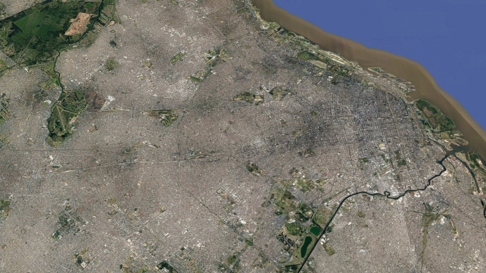

mirar al horizonte
y tirar del hilo
las ciudades parecen expandirse aplastando el suelo. el cemento rodea a los edificios, dejando únicamente algunos espacios designados para que la tierra se asome
cada tanto me llegan los discursos sobre la cantidad de metros de espacios verdes y las ventajas medioambientales y tal
pero simplemente mirando un mapa, esto parece ridículo.
la ciudad es absurdamente grande.
En su video Cities Without People, mi principal inspiración para esta obra, Jacob Geller decía que incluso si mañana hiciéramos desaparecer los autos, el paisaje siempre quedará atravezado por las marcas de cemento:
Flying over cities, it's unavoidable how much land is taken up by just, ugly ass parking lots.